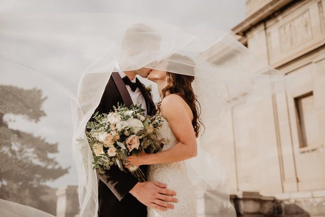

Private events

Located in the heart of Moldova, at only a half an hour from Chisinau, Villa Negra is a perfect location for truly memorable events. The large array of unique indoor and outdoor spaces make us one of the best event venues to hire for weddings, concerts, private parties. We also host four incredible events each year where both young and old can enjoy the delights of the celebrations held at Villa Negra
If you’re looking to hire the perfect venue for your private party, Villa Negra’s’s incredible array of stunning indoor and outdoor spaces and evergreen gardens makes for the ideal venu to host the party you have been dreaming of.Our team of chefs and party planners will fill your event with exquisite wine, food, music and memories to last a life time.
Wedding
Live your fairy tale wedding amongst the historic beauty of our Winery,evergreen gardensand stunning outdoor terraces. Our team of chefs and event planners will fill your day with exquisite wine,food, music and memoriesto last a life of time.Our fine dining restaurant is an elegant and chic space with tables of varying sizes that can be grouped and located by request. It is 220 square metres in size and can hold up to 80 people.From picking your menu to making sure your day runs smoothly; our events manager and chef will be nearby with advice and suggestions to make your wedding truly memorable and unique.
Choose from a mouth-watering array of exquisite, high quality cuisine to delight your guests. Our chef can prepare samples to help you design your perfect menu; suggesting both the dishes and how they can be presented to ensure both a delicious and beautiful gastronomical experience.
Anniversary
If you’re looking to hire the perfect venue for your anniversary party, Villa Negra is the best choice to do it.It has stunning indoor and outdoor spaces and evergreen gardens makes for the ideal venu to host the party you have been dreaming of.Our team of chefs and party planners will fill your event with exquisite wine, food, music and memories to last a life time.